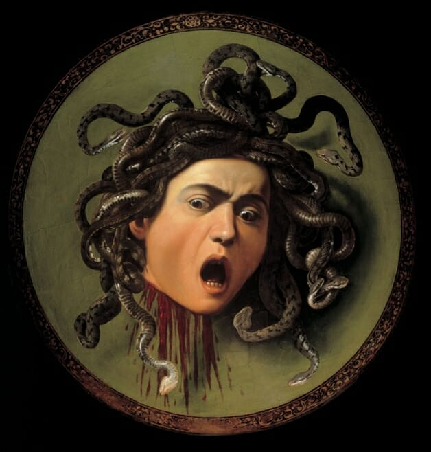
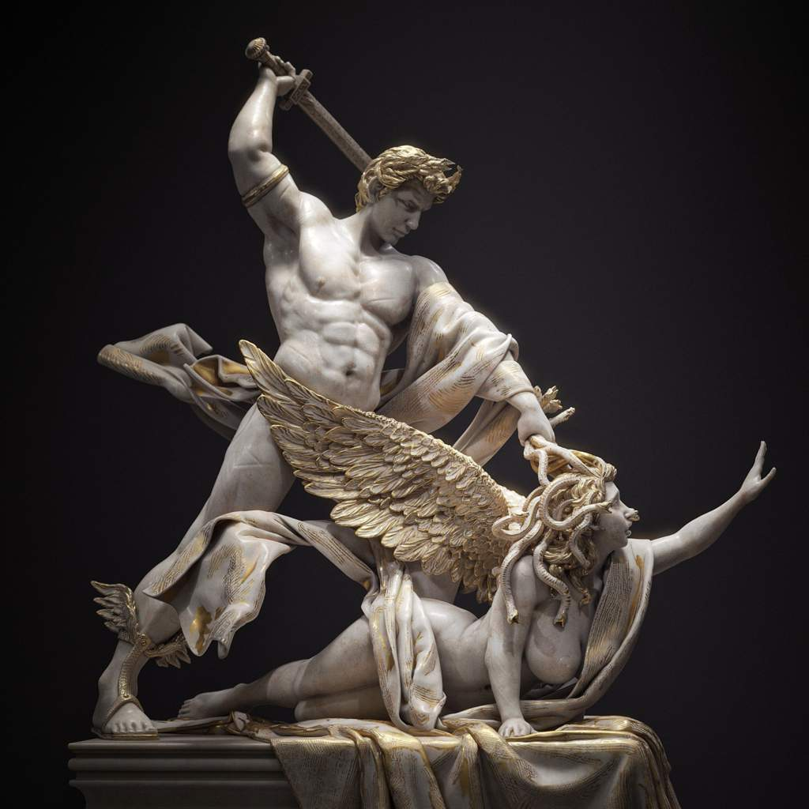

O mito de Medusa na Mitologia Grega
Introdução e história da Medusa
Na mitologia grega, Medusa era uma criatura representada por uma mulher com serpentes no lugar dos cabelos, presas de bronze e asas de ouro. Simbolicamente, Medusa era trágica, solitária e figura uma mulher incapaz de amar e ser amada. Odiava os homens por ter sido seduzida, e também odiava as mulheres, pois não se conformava em ser uma criatura monstruosa.
Conta o mito que Medusa foi uma sacerdotisa do templo de Atena (em algumas versões ela já era a criatura mítica, contudo, ainda não tinha sido amaldiçoada). No entanto, Medusa é assediada amorosamente por Poseidon, o deus dos mares, cedendo aos seus encantos ao deitar com ele no templo da deusa Atena. Diante disso, Atena transforma seu cabelo em serpentes e seu rosto num horrível semblante capaz de transformar em pedra todos que encontram seus olhos.

Assim, Medusa passou a viver na extremidade do ocidental do mundo, junto à entrada do reino dos mortos. Ao redor de seu covil, diversas estátuas de pedra de homens e animais - suas vítimas - adornavam o ambiente.
Medusa e Perseu
O mito da Medusa se entrecruza com outro bem conhecido, o de Perseu. Segundo o mito, ela foi decapitada pelo herói, o qual lutou com a Górgona olhando apenas o seu reflexo no escudo polido.
Ao decapitá-la, algo inusitado ocorreu: duas criaturas nasceram, pois Medusa estava grávida de Poseidon. Assim, surgiram o cavalo alado Pégaso e o gigante dourado Crisaor. Não foi só isso: Perseu notou que de uma veia do monstro jorrava um veneno mortal e, na outra, o elixir da vida eterna. Após utilizar a cabeça decapitada como arma para vencer seus inimigos, o herói entregou o artefato para Atena, a qual fixou-o no escudo do guerreiro, criando assim o poderoso Aegis.